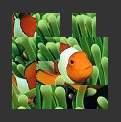

Open a 2D drawing area specified by the size field. Children nodes out of this
area will not be visible (they will be clipped).
The position origin of the area is the result of above transformations.
Note:
Only use Layer2D
if you need to clip the children nodes. Otherwise, just use a
Group or a
Transform2D.
MFNode children NULL:
List of nodes to render in the area.
SFVec2f size -1 -1:
Size of the drawing area.
A value of -1 in size represents the screen width (or height).
